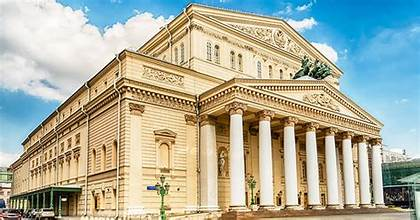
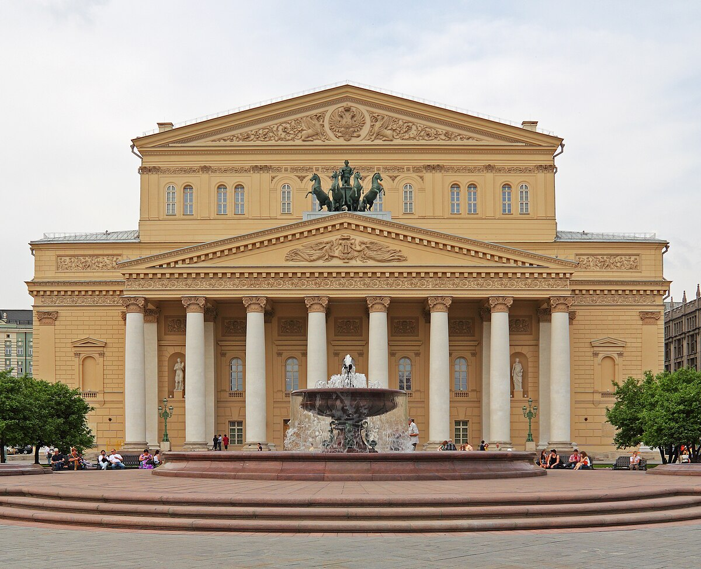
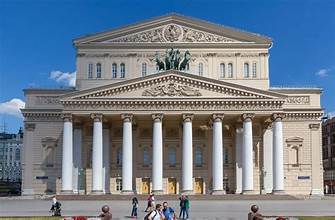
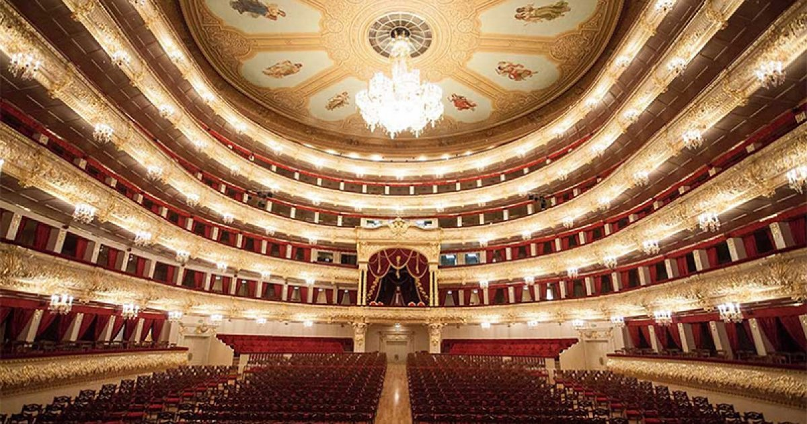
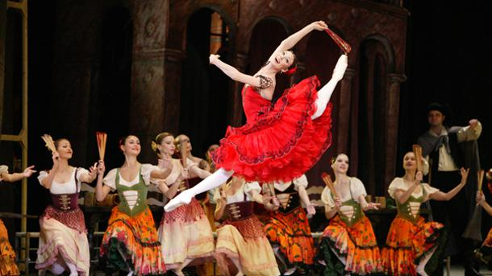
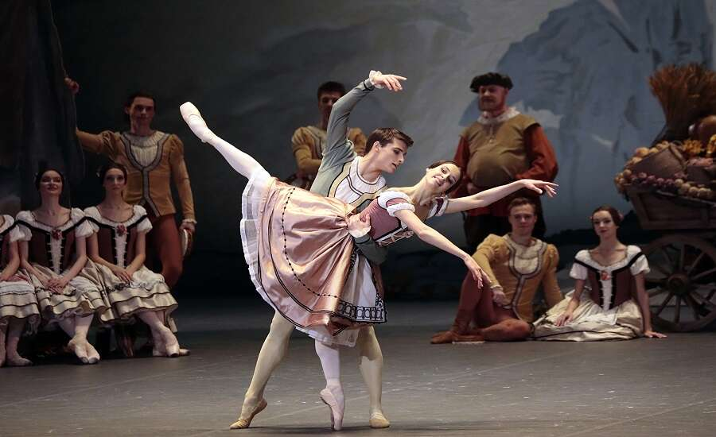

The Bolshoi Theatre is a historic performing arts venue in Moscow, Russia, renowned as one of the world’s leading centers for ballet and opera. It is home to the prestigious Bolshoi Ballet and Bolshoi Opera companies and stands as a symbol of Russian cultural heritage and classical performance excellence.
The theatre was commissioned by Prince Pyotr Urusov and opened in 1825 after the first building burned down. Designed by architect Joseph Bové, its neoclassical façade, with Corinthian columns and the iconic Apollo quadriga sculpture, became an architectural landmark. The interior features lavish gilded décor and exceptional acoustics, restored meticulously during major renovations completed in 2011.
For over two centuries, the Bolshoi has been central to Russian performing arts, premiering works by Tchaikovsky, Mussorgsky, and Prokofiev. Its ballet company is among the oldest and most prestigious globally, shaping the evolution of classical ballet. The theatre’s performances draw international audiences and dignitaries, symbolizing Russia’s artistic and cultural identity.
Following a six-year restoration concluded in 2011, the Bolshoi reopened with state-of-the-art stage technology and revived imperial-era interiors. Today it operates multiple stages, hosts international tours, and participates in cultural diplomacy. Its performances are broadcast worldwide, maintaining its status as a global beacon of classical performance arts.
Visitors can enjoy a range of performances throughout the year, from classic ballets to contemporary operas. The theatre offers various seating options and provides detailed information about shows and ticketing on its official website.
The Bolshoi Theatre remains a cornerstone of Russian cultural life, continuing to inspire audiences with its rich history and exceptional performances.


